规则
- 仍然是卡片，只在手机宽度生效。页边距 8，卡片间距 6，圆角 16，内边距 14；阴影和已读退色不变。
- 摘要最多 2 行。带人像的头部合成一行。附件占满整行；手机卡片不再为更多按钮留空白。
- 文章：右侧 76 见方缩略图，圆角 control-radius。视频和照片保留 2:1 大图。
- 日程：开始时间在左侧一列（figure-route 28），右侧写标题和「至 结束时间 · 共 N 分钟」；「加入」和参与者同一行，靠右。
- 提醒：头部「提醒 · 来源名」，右侧是来源里的时间，到点用 alert。卡上没有按钮，accent 描边的圆圈就是「完成」，只改 Sill。详情里保留「在 Sill 内再提醒」和「完成」。
- 待办：每项 28 高，圆圈 18，accent 描边；不写「另有 N 项」。勾选只改 Sill。
- 顶栏：居中 Sill 标志（点它回到顶部），下面一排「全部 / 未读 / 待办 / 稍后读 / 收藏」。当前一格 ink 加粗加 3px 短线。标签只筛主页。frost 磨砂底。
- 往下滑：顶栏和底部胶囊一起收起；往上滑一起回来。
- 新内容：顶栏下方（收起后在状态栏下方），最多三个来源类型图标加「↑ N 项新内容」，白色玻璃，不用 accent 实底。
- 桌面不变：没有顶栏和分栏标签；提醒卡和勾选圈的规则两端一致。
手机 390 · 主页
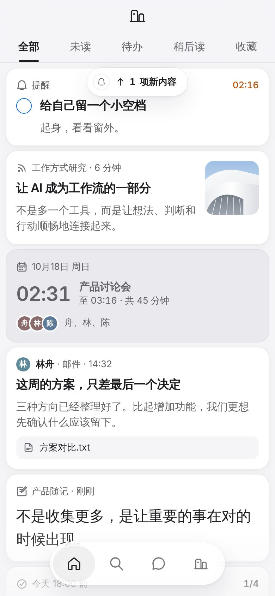
打开时：顶栏、标签和收紧的卡片
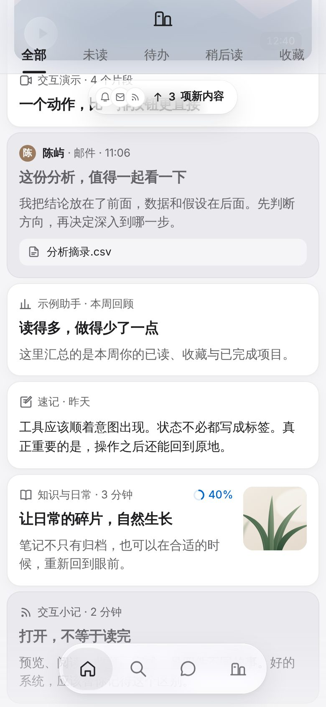
往下读：顶栏和胶囊收起，新内容提示留在顶部
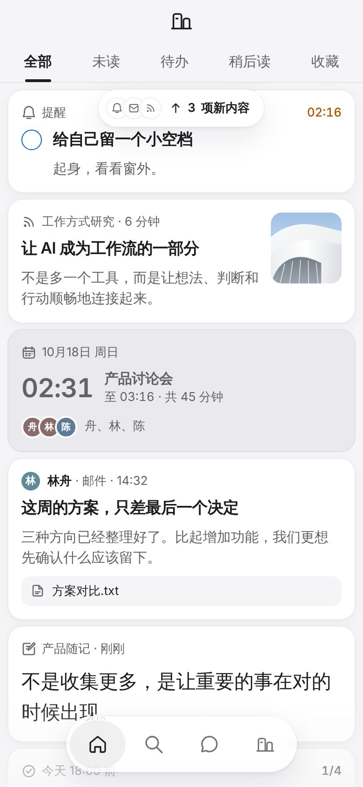
回到顶部：新内容提示在标签下方
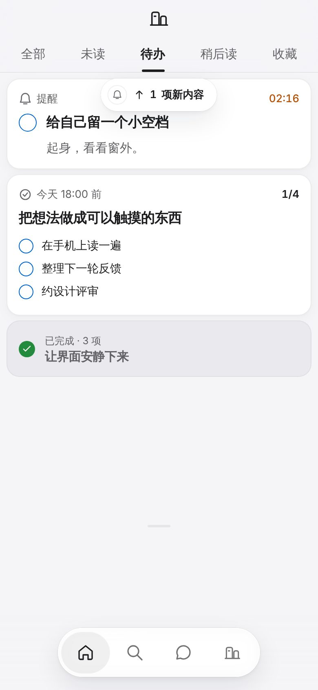
「待办」：只看待办和提醒
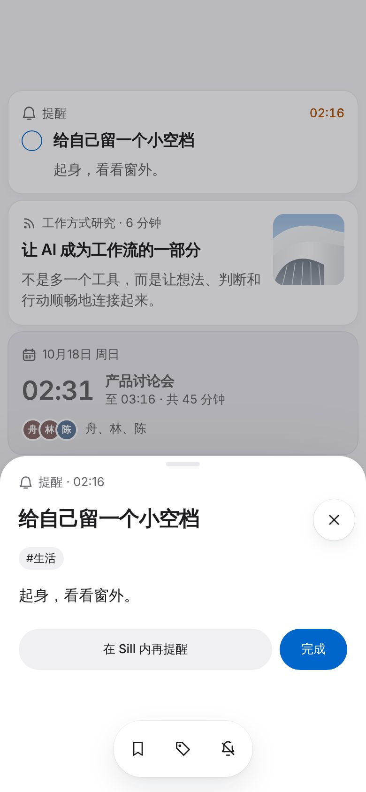
提醒详情：在 Sill 内再提醒、完成
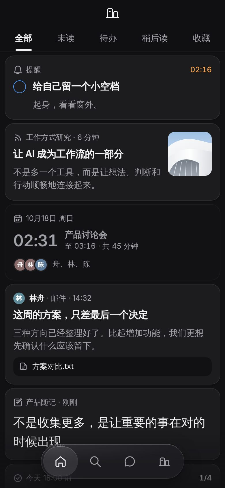
深色
卡片（原尺寸 2 倍截图）
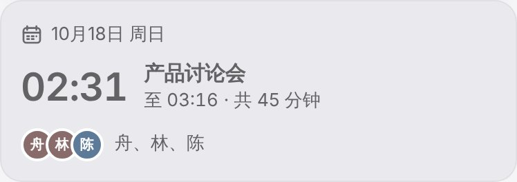
日程：时间一列，加入靠右
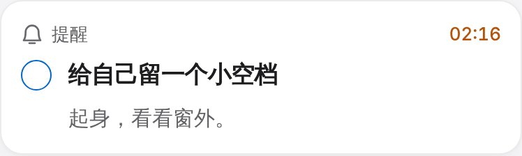
提醒：来源时间，圆圈就是完成
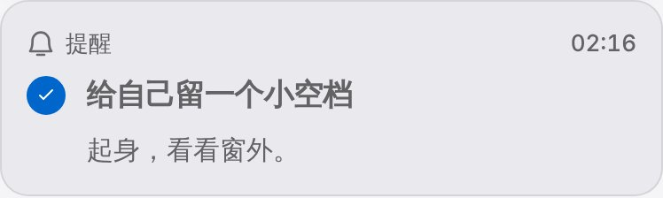
提醒：在 Sill 内标记完成后
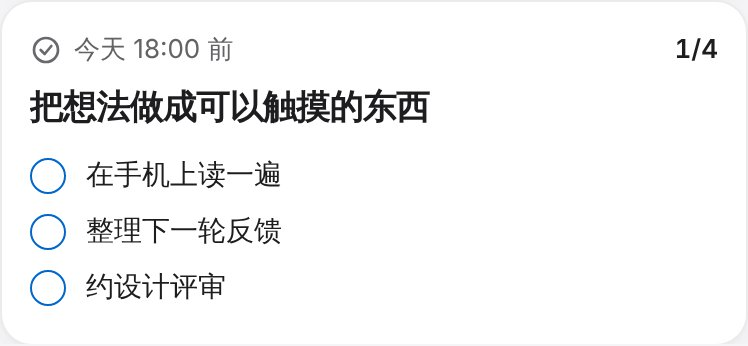
待办：每项 28 高
邮件：头部一行，附件占满整行
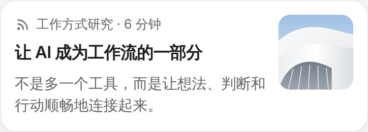
文章：右侧缩略图
图标：更方正
sill：改前 / 改后
mail：改前 / 改后
video：改前 / 改后
folder：改前 / 改后
桌面 1440 · 不变
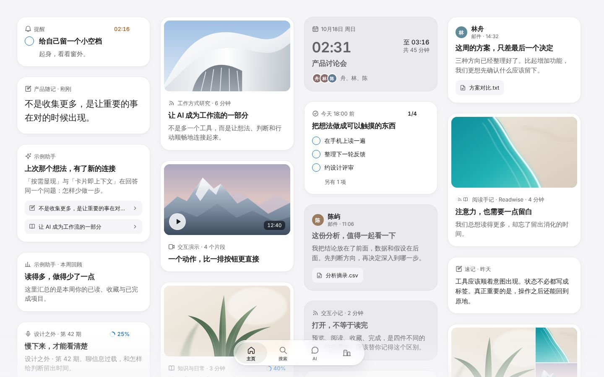
桌面工作台：没有顶栏，只换了图标和提醒卡